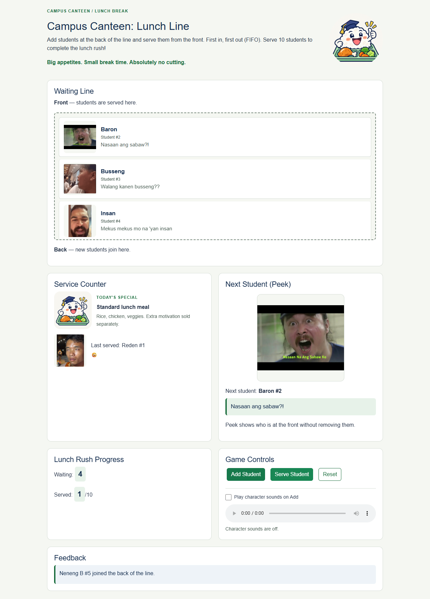
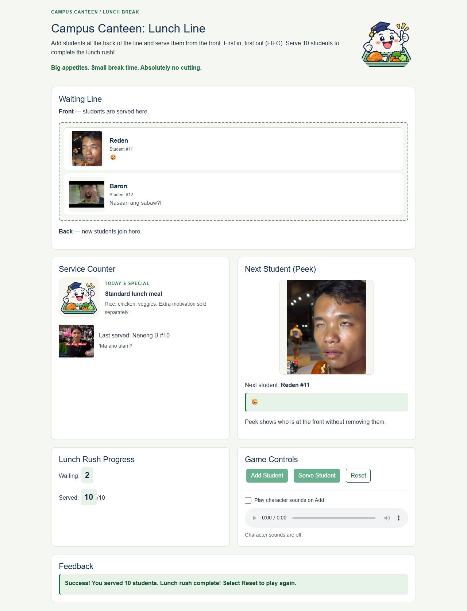

CC104 — Data Structures and Algorithms
Course Term Project
Team: Jared, Eric, Fred, Russ
Serve 10 students in arrival order using a first-in, first-out queue. The interface uses a light background, navy headings, green controls, numbered meme student cards, a cheerful rice mascot, and one standard lunch meal.
Extract the complete repository, then open index.html. Keep its css and js folders in place. No server or internet is required. Refresh starts a new game.
HTML provides structure; local Bootstrap supplies responsive utilities and component styles; custom CSS supplies the school theme. JavaScript implements queue operations. Local jQuery handles clicks and interface updates. GitHub preserves shared source and reviews.
Bootstrap and jQuery are bundled with their licenses. The game makes no HTTP requests during the automated offline checks.
Administrative details to confirm before submission: full names if required, section, group number, and exact deadline.
The queue is an array of objects such as { number: 1 }. Index 0 is the front. Student numbers are identifiers, not positions.
| Stored state | Purpose |
|---|---|
| queue | Waiting customers, ordered by arrival |
| nextQueueNumber | Next unused student number |
| servedCount | Successful serves |
| lastServedCustomer | Most recent successful serve, or null |
| SERVED_TARGET | Constant target of 10 |
| Function | Steps |
|---|---|
| enqueueCustomer() | Reject completion; create customer; push at rear; increment numbering; return customer. Rejection returns null. |
| dequeueCustomer() | Reject empty/completed state; shift front; increment served; return customer. Rejection returns null. |
| peekCustomer() | Read queue[0], or return null. No mutation. |
| resetGame() | Reset stored state. Its click handler clears feedback and redraws. |
| updateDisplay() | Traverse and render queue; update next, waiting, served, Last served, and enabled controls. |
The Serve handler updates Last served from the returned customer only on success. Queue operations guard completion even when called directly.
Add #1, #2, #3. Peek reports #1 without changing the line. Serve returns #1 and leaves #2, #3. Add #4: the queue is #2, #3, #4, waiting is 3, and served is 1/10.
Array enqueue is typically amortized O(1); peek is O(1); shift-based dequeue is O(n). Rendering traverses n waiting customers in O(n), with O(n) queue storage.
After serving #1 and adding another student, arrival order and Last served remain consistent.

Ten served, two still waiting: Add and Serve are disabled until Reset.

Automated browser checks passed at 1280px and 375px using offline file launch: arrival order, repeated peek, empty-queue handling, FIFO serving, counts, completion guards, Reset, and refresh. No HTTP requests, console errors, or horizontal page overflow were observed. See test-results.md for the full record.
Five named user-supplied meme portraits, and an AI-generated rice mascot are bundled in assets. Portraits repeat by student number and follow the served student to the counter. The first profile is Reden with the woozy-face dialogue. User-supplied MP3s play on successful Add clicks through one player. Reset stops sound, and a sound toggle supports quiet play. Names, captions, and audio are cosmetic; queue numbers and FIFO behavior remain unchanged. The exact generation prompts are recorded in assets/README.md.
The course calls for library integration and offline launch. Bootstrap and jQuery are stored locally and loaded before dependent custom code. Offline checks verify the game does not rely on an internet connection.
Reported contributions: Jared — HTML and Add integration; Eric — styling and local libraries; Fred — initialization and enqueue; Russ — dequeue. AI assistance completed final Serve/Reset integration, feedback, checks, and documentation. Human review of these final additions is still required; this report does not claim it occurred.
Use the accompanying demo guide for a 10–15 minute rehearsal. Everyone should explain FIFO, return values, invalid-action guards, and their own code.
The team must review the final changes, record and upload its group demonstration, confirm identifying details and deadline, and submit the printed report and MS Teams materials. These actions are not marked complete.